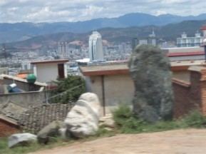

云南之旅7开往丽江的路上
#1 云南之旅7开往丽江的路上作者：蓝天蓝 发表时间：2011-7-2 14:43:40
云南之旅7开往丽江的路上
时间2011.6.22. 14 ：20
浏览了大理的洋人街以后，我们上车继续下面 行程 去往丽江，一路上都是在走盘山道，道路两旁有很多民居

行程大约要5个小时左右。坐到车上，导游就开始了讲解一些有关丽江少数民族的故事。
丽江 的房子都是木头搭建的，都是却很结实，在1996.2.3发生的7.0级地震，这些木头房子居然没有倒塌，后来国家把这些没有倒塌的房子列为世界文化遗产。
导游介绍摩梭族:
摩梭人，是迄今中国惟一保存有母系氏族社会特征的人群。实行“男不娶，女不嫁”的“走婚”制度。
“走婚”必备的几件东西：
1、没有松肉的松子，把里面塞满一些猪肉
2、一把小刀
3、一顶帽子
这些东西的作用：
1、塞满猪肉的松子是用来喂狗的，这样你就可以有足够的时间找到你要走婚的人的房间
2、小刀是用来开门的，他们那里是木制房子，就直接插上的，用小刀一巴拉就开了
3、帽子要挂在房子外边，告诉后来的人，这里已经有人走婚了，你不要来了
生活在云南省西北部,四川、云南交界处风光秀丽的泸沽湖畔，人口约五万，有自己的本民族语言，但没有文字。人类社会发展到21世纪的今天，泸沽湖畔仍保留着母权制家庭形式，被人们称之为“神秘的女儿国”，这是引起中外学者和游人最感神秘最感兴趣的摩梭文化现象之一。 云南摩梭人被划为纳西族的一个分支
介绍的纳西族：
#2 Re:云南之旅7开往丽江的路上作者：掌棋如烟 发表时间：2011-7-3 8:37:31
以后严禁99踏足纳西族的地界
［ 被感动的人 于 2011-7-3 12:28:57 时花20金币送鲜花一朵］